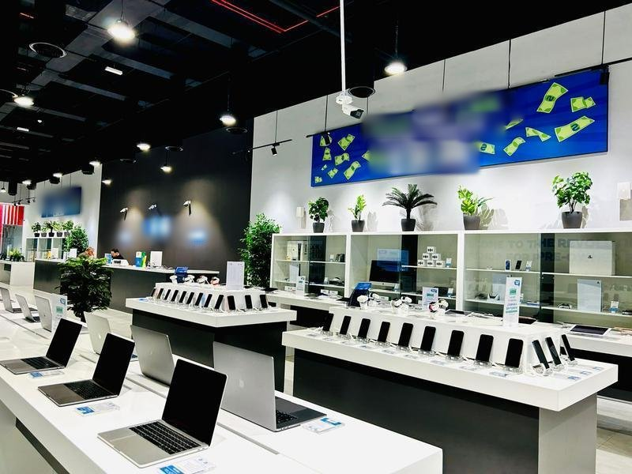

I analysed Oceanview Resort's data to address declining revenue and high cancellation rates. Using Excel, I identified peak booking periods, low repeat bookings, and cancellations trends. The insights gained and recommendations made helped the resort reduce churning and cancellation rates to 72% and 54% respectively, with a 54% increase in revenue.

I analysed Oceanview Resort's data to address declining revenue and high cancellation rates. Using Excel, I identified peak booking periods, low repeat bookings, and cancellations trends. The insights gained and recommendations made helped the resort reduce churning and cancellation rates to 72% and 54% respectively, with a 54% increase in revenue.

I had the task to build this dashboard for a 10Alytics client in the aviation industry, using their customer data.
this project is based on a dataset from one of the largest and most prominent airlines in the world. Renowned for its commitment to service excellence, the airline is synonymous with luxury travel, providing passengers with top-tier amenities, cutting-edge technology, and unparalleled comfort both in the air and on the ground. For some time, the company noticed a decline in patronage and decided to investigate.
The dataset covers a period of 9 years in which the airline got very low customer ratings and poor reviews. This project is aimed at analyzing the company's customer experience data to gain insights as it relates to low patronage.
I utilized Power Bi to gain insights from the company's customer data as regards to poor ratings and reviews.
I leveraged Power Query to clean and transform the raw data set and proceeded to visualize my data by creating an insightful dashboard on the report view.
The dashboard provides insights about customer experience based on the interactions between the following factors.
Seat Type, Route Travelled, Country, Type of Traveler, customer recommendation.

MaxCorps Electronics is a mid-sized electronics retail company with operations spanning across multiple regions. The company is facing a challenge related to their sales and shipping operations. While carrying out a root cause analysis to identify the problem and reverse the trend, I took a dive into the company’s sales data to gain insights that could help the company address these issues and improve their overall performance. I leveraged Power Bi for this analysis. Using Power Query, I extracted, cleaned, and transformed the raw data and visualised the data by creating an insightful dashboard on the report view. From the analysis, I was able to identify the most popular shipping mode, the region where the company has the highest sales, the sales distribution across months of the year, the product category that generates the highest income, the product category with the most sales, the sum of sales by category and the company’s invaluable customers. These insights helped the company make strategic data-driven business decisions that solved the current problems and boosted the company’s annual sales by 45%

ABC Retail, a well-established e-commerce retailer, needed to gain deeper insights into customer behaviour to improve their online shopping experience and boost sales. The company observed that their e-commerce platform was not achieving the desired level of success, given the substantial investment made in its development. The return on investment (ROI) for their online store was lower than anticipated, indicating a need to enhance its revenue-generating capabilities.
As a Business Analyst, I had the task to conduct a comprehensive revaluation of the online store and its operational processes. I used Excel to analyse the company’s online store data, I leveraged pivot charts to build an insightful dashboard showing customer preferences, cart conversion rate, time-based trends and customers’ overall search and browsing experience. ABC retail had a 55% boost in sales and an improved star rating after implementing strategic business improvement decisions based on the insights and recommendations from this analysis.
Tech Haven Electronics is a popular electronics store in the city. As a Business Analyst, I used PostgreSQL to analyse their data for improvements. I created a database and looked at customer details for each sale, found products never purchased, and got info on products and sales, including prices and quantities. This helps Tech Haven make smart decisions for better customer service and business growth.

Exploration of Covid-19 dataset in Microsoft SQL Server. I am a data enthusiast and I find it exciting and fulfilling to explore realtime datasets. Sounds geeky right? like who Explores data for fun? well...me! I use random data explorations to learn and upgrade my skills.

Donec eget ex magna. Interdum et malesuada fames ac ante ipsum primis in faucibus. Pellentesque venenatis dolor imperdiet dolor mattis sagittis magna etiam.

Donec eget ex magna. Interdum et malesuada fames ac ante ipsum primis in faucibus. Pellentesque venenatis dolor imperdiet dolor mattis sagittis magna etiam.